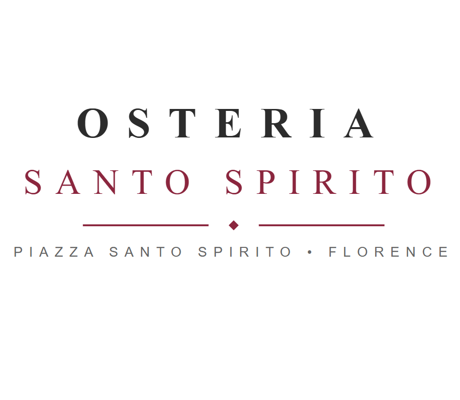

Pizzeria • Naples
Pizzeria Brandi
A world-famous pizzeria in Naples, famous for inventing the legendary Pizza Margherita in 1889.
Visit WebsiteDISCOVER AUTHENTIC SPOTS
Explore iconic pizzerias, family trattorias, and cozy osterias to experience traditional Italian food and hospitality.
A world-famous pizzeria in Naples, famous for inventing the legendary Pizza Margherita in 1889.
Visit WebsiteA classic Roman trattoria in Trastevere, serving hearty Cacio e Pepe and Carbonara in an authentic setting.
Visit Website
A warm, vibrant restaurant in Florence offering baked gnocchi, Tuscan steaks, and local Chianti wines.
Visit Website| Restaurant | City | Type | Specialty Dish |
|---|---|---|---|
| Pizzeria Brandi | Naples | Pizzeria | Pizza Margherita |
| Trattoria da Enzo | Rome | Trattoria | Roman Carbonara & Cacio e Pepe |
| Osteria Santo Spirito | Florence | Osteria | Tuscan Gnocchi & Steaks |